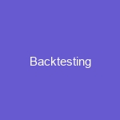

News
Backtesting Software
Backtesting Software
Statistical Modeling
Machine Learning Techniques
Risk Management Strategies
Strategy Testing Tools
Automated Trading Rules
Quantitative Strategies
Quantitative Strategies
Trade Execution Algorithms
API Integration
Order Entry and Management
High Frequency Trading
Trade Reporting and Compliance
Automated Trading Platforms
Automated Trading Platforms
Backtest Environment Setup
Strategy Development Process
Risk Management Rules
Portfolio Construction
Execution Analytics
Algorithmic Trading Systems
Algorithmic Trading Systems
Data Visualization
Financial Modeling
Portfolio Valuation
Predictive Analytics
Data Mining
About Us
How to Maximize Your Profits with the Best Backtesting Platforms
How to Maximize Your Profits with the Best Backtesting Platforms
Posted by on 2023-12-03
Maximizing profits is an important goal for any business, and the best backtesting platforms can help you achieve this. Backtesting involves testing a trading strategy on historical data to ensure it would have been successful in the past. By using a backtesting platform, you can identify strategies that have provided consistent returns and see how they could be used to make money in the future.
Backtesting platforms provide a range of features that allow you to assess risk, customize strategies, access data from multiple sources and implement automated trading algorithms. With these tools you can optimize your trades for maximum efficiency, minimize potential losses and maximize potential profits.
The key to success with backtesting platforms is to select one that provides reliable data and easy-to-use features. You should also look for platforms that offer support services such as tutorials or customer service so you can get help if needed. Additionally, some backtesting platforms may offer additional services such as portfolio analysis or market sentiment analysis which can give you valuable insights into your investments.
When choosing a backtesting platform it's also important to consider its cost structure and compare different pricing models to find one that suits your budget and needs. Some may charge subscription fees while others may charge per trade or offer free trials so you can test their services before committing long-term.
Overall, the best backtesting platforms provide comprehensive tools and resources that help traders identify profitable strategies quickly and easily. They also provide access to reliable data sources so traders don't have to worry about inaccurate information affecting their decisions. With careful selection of a platform tailored specifically towards your goals, you'll be able maximize your profits while minimizing risks associated with investing in financial markets
Previous
Next